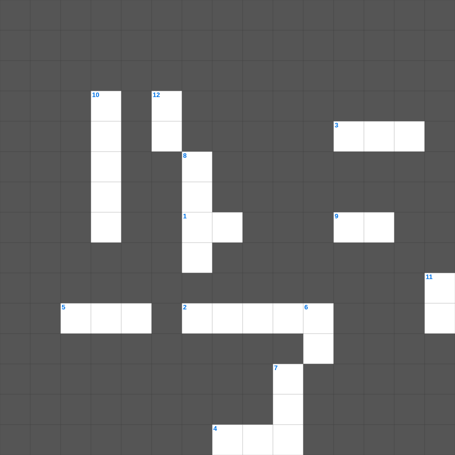

성경 상식: 직업
📌 서비스 정의
십자가로세로는 교회 주보와 주일학교에서 사용할 수 있는 성경 기반 가로세로 퍼즐 서비스입니다. 성경 인물, 사건, 핵심 구절을 바탕으로 제작되었습니다. 온라인 풀이 및 인쇄 기능을 제공합니다.
무료로 즐기는 성경 상식 성경 상식 성경 퀴즈 문제! 12개의 힌트로 구성된 가로세로 낱말 퍼즐입니다. PC와 모바일 모두 지원되며, 정답을 바로 확인할 수 있어 혼자서도 쉽게 풀 수 있습니다.

📝 가로 힌트
1. 믿음으로 정탐꾼을 숨겨준 기생
2. 탕자가 돌아왔을 때 아버지가 입혀준 것
3. 나사로의 누이이자 예수님의 발에 향유를 부은 여인
4. 한 해의 첫 열매를 드리는 절기
5. 나아만 장군이 씻은 강
9. 베드로와 안드레의 직업
📝 세로 힌트
6. 예수님의 옷 가에 달렸던 것
7. 맥추절 혹은 칠칠절이라 불리는 신약의 절기
8. 에덴 동산에서 흘러나온 네 강 중 하나
10. 바울이 아테네에서 복음을 전한 언덕
11. 야곱이 사다리 환상을 본 곳
12. 예수님의 지상 직업
🧩 이 퍼즐에서 배우는 내용
이 퍼즐은 성경 상식: 직업의 핵심 단어와 개념을 자연스럽게 복습할 수 있도록 구성되었습니다. 주일학교 수업이나 개인 성경공부에서 학습 내용을 점검하는 용도로 바로 활용할 수 있습니다.
🧑🏫 교회 교육 자료 활용
이 퍼즐은 주일학교 교재 추천 자료로 활용할 수 있고, 주일학교 주보에 넣기 좋은 분량으로 구성되어 있습니다. 수업용 주일학교 교안에 활동지로 붙이거나, 예배 후 복습용 주일학교 공과교재로 바로 사용할 수 있습니다.
🏷️ 키워드
성경 상식 성경 퀴즈 문제, 성경 상식, 십자가로세로, 성경퀴즈, 말씀퀴즈, 가로세로퍼즐, 주일학교 교재 추천, 주일학교 주보, 주일학교 교안, 주일학교 공과교재